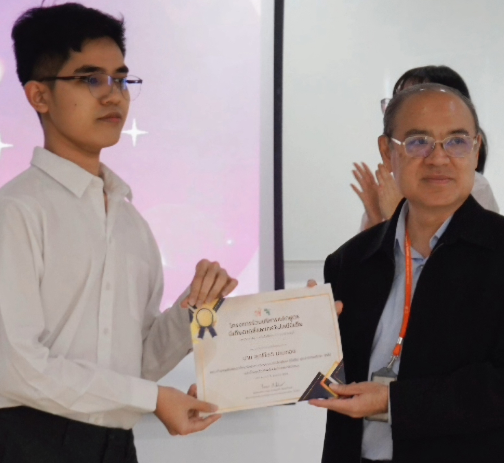

งานอดิเรก :
- ทำคอนเทนต์เกี่ยวกับการ์ดเกมลงช่องทาง Youtube และ Tiktok
- การติดตามเทรนด์ใหม่ ๆ และนำมาประยุกต์ใช้กับคอนเทนต์ที่ตัวเองทำ
- ถ่ายภาพทิวทัศน์และตัดต่อวิดีโอ
- วิเคราะห์ข้อมูลหลังบ้านเพื่อปรับปรุงคอนเทนต์ให้ดียิ่งขึ้น
- ตัดต่อวิดีโอเล่น ๆ ทั้งลงเพื่อสร้างความรู้และสร้างความสนุกสนาน
ทักษะความสามารถ :
Hard Skill :
- การตัดต่อวิดีโอและตัดต่อรูปภาพด้วย Canva และ Capcut
- ทักษะการใช้โปรแกรม Mircosoft เช่น Word และ Excel
- ทักษะการใช้โปรแกรมของ Google เช่น Google Sheet และ Google Form
- Scoial Media Management and Analysis
Soft Skill :
- การทำงานร่วมกับทีมและสื่อสารความคิดออกมาได้อย่างเป็นระบบ
- การวิเคราะห์ข้อมูลเพื่อทำคอนเทนต์ออกมาให้เกิดประสิทธิภาพสูงที่สุด พร้อมกับรายงานผล
ความสนใจ :
- Digital Content Creation & Storytelling - สร้างสรรค์เนื้อหาที่เข้าถึงง่ายและน่าดึงดูดกับผู้ชม
- User Experience (UX) Design Principles - ออกแบบผลงานที่เน้นผู้ใช้งานเป็นจุดศูนย์กลาง
กิจกรรม/ประสบการณ์อื่น ๆ (Activity) 🏆

ภาพการเข้าร่วมกิจกรรมสโมสรนักศึกษา
เป็นสมาชิกสโมสรนักศึกษาของโครงการร่วมบริหารหลักสูตรมีเดียอาตส์และเทคโนโลยีมีเดีย รุ่นที่ 14 (ปีการศึกษา 2567)
- ตำแหน่ง: เอกสาร
- ความรับผิดชอบหลัก : จัดทำเอกสารข้อเสนอโครงการ (Project Proposal) , วางแผนกลยุทธ์การดำเนินงาน, และจัดทำงบประมาณ/กำหนดการ
- ความสำเร็จที่โดดเด่น : นำเสนอการจัดการโครงการ "มีเดีย มาร์เก็ตครั้งที่ 7" ที่ได้รับเสียงตอบรับอย่างท่วมท้น และกิจกรรมมีผู้เข้าร่วมรู้สึกที่สนุกสนานอย่างมากมาย
- ทักษะที่ได้รับ : Proposal & Document Management, Strategic Budgeting, Project Timeline Creation และการทำงานร่วมกันเป็นทีมอย่างมีระบบ